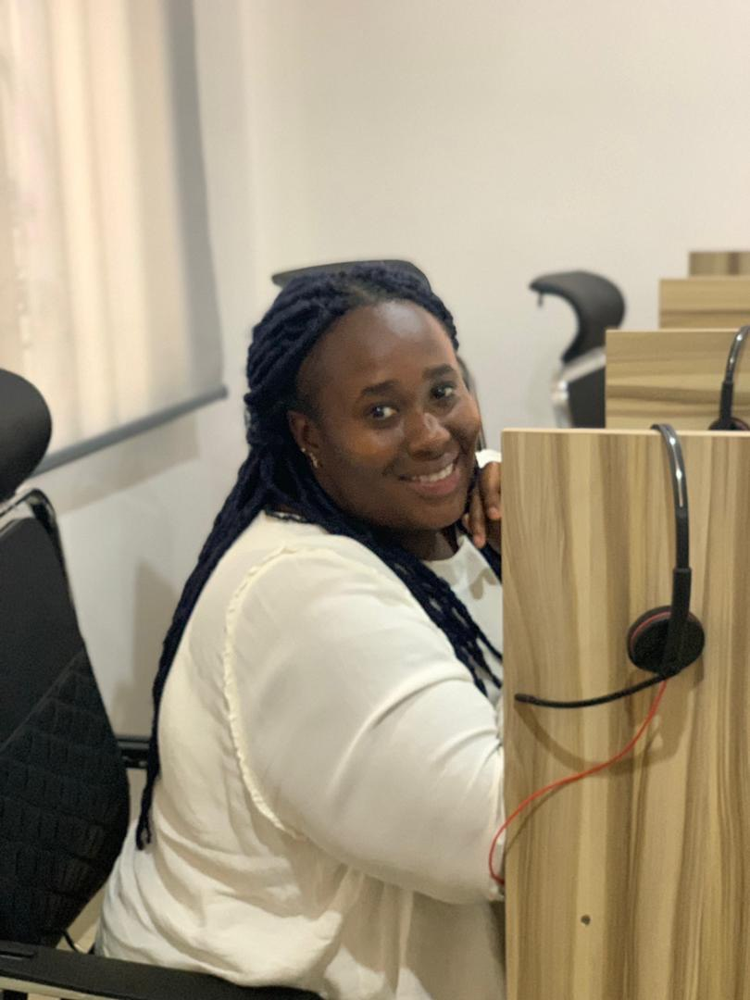

I build full‑stack tools with React, Node, and MongoDB(MERN).

user-centric architecture
streamline workflows
pair programming
Developing web applications and solutions for clients, with expertise in full-stack JavaScript development.
Completed intensive training in digital technologies, deep tech, and soft skills to support and empower women in tech.
Developed strong analytical and problem-solving skills through scientific education.
I share daily coding tips, project walkthroughs, and behind-the-scenes of my developer life on TikTok. Perfect for beginners and anyone interested in tech!
@hercodingjournalI share insights on full-stack development, career pivots, and the human side of coding. Here are my latest LinkedIn articles.
crafting digital experiences with heart & precision
project collaboration, mentorship, or just a chat — I'd love to hear from you.